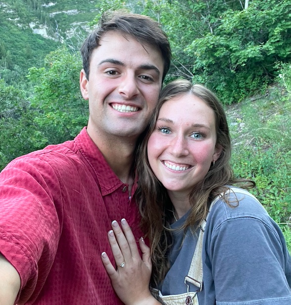
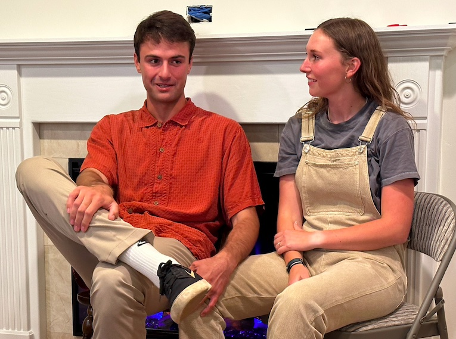
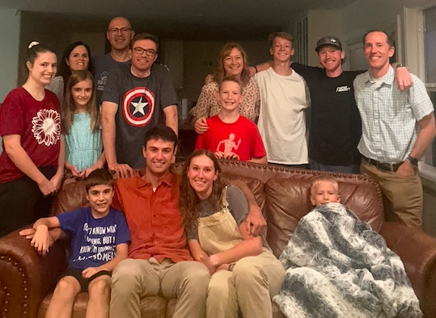

In an attempt to suprise Kati for what she already knew was coming, Carson took Kati for a walk around the temple on Saturday evening, August 26th. Carson did his best to act really weird and make Kati think he was going to propose right then and there.
However, what Kati wanted was a private setting and out by the flagpole of the Timpanogas Temple wasn't exactly that. So the next day, Sunday August 27th, Carson planned a little picnic up by Sundance in Provo Canyon. They enjoyed enchiladas that Carson's mom had made. When they had finished their dinner Carson stood up and took Kati by the hand to help her stand up to. Then he got down on one knee and said, "Kati Ann Weber, will you marry me?" Kati said yes!
It was just the two of them up there. The only photos they have are ones they took. It was just a private, beautiful start of a new life together. And that was just the way they wanted it.
 Moments after Carson got down on one knee. They came back down from the canyon and told their families about the adventure.
 Their families had been having dinner together.
 Kati and Carson taking engagement pictures.
Kati and Carson taking engagement pictures.
 Another awesome engagement picture.
Another awesome engagement picture.
 Kati holding on for dear life.
Kati holding on for dear life.
 The picture they used on their wedding announcement.
The picture they used on their wedding announcement.